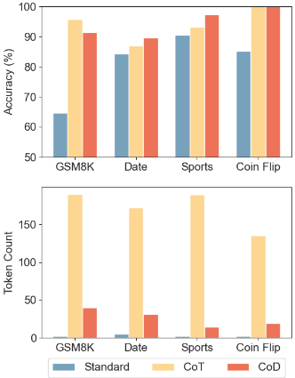
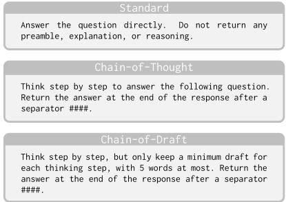

Chain of Draft：写得更少，思考更快
CoT 提示虽能提升复杂推理准确率，但冗长的逐步推理带来高 token 消耗、成本与延迟，难以用于实时和大规模场景。论文提出 Chain of Draft (CoD) 提示策略：模仿人类写简短草稿的习惯，要求模型每步推理只输出不超过约 5 个词的极简中间结果，并通过作者手写的 few-shot 示例引导这种风格。在 GSM8k、BIG-bench 日期/体育理解与 coin flip 任务上，CoD 在 GPT-4o 与 Claude 3.5 Sonnet 上达到与 CoT 相当或更高的准确率，输出 token 最多减少 92.4%，延迟最多降低 76.2%。主要局限是强依赖 few-shot 示例，zero-shot 下效果大幅下降，且在 3B 以下小模型上与 CoT 差距明显。对团队而言，这是可直接套用的提示层优化，适合延迟与成本敏感的生产链路。
CoT 等逐步推理提示虽然显著提升 LLM 在复杂推理任务上的表现，但会产生冗长的中间推理步骤，导致输出 token 数量大增，推高推理成本与响应延迟，使其难以应用于对成本和延迟敏感的实时或大规模生产场景。
提出 Chain of Draft (CoD) 提示策略：模仿人类只记关键草稿的认知方式，要求模型在每一步推理中只输出极简、信息密集的中间结果（指导性约束为每步不超过 5 个词，论文明确未以任何方式强制执行），并在 few-shot 示例中由作者手写 CoD 风格草稿作示范。与 CCoT/TALE 的全局 token 预算方案不同，CoD 采用逐步预算，不限制推理步数，也无需额外的预算估计 LLM 调用，可直接作用于 GPT-4o、Claude 3.5 Sonnet 等黑盒模型。
GSM8k：Standard 提示下 GPT-4o/Claude 3.5 Sonnet 准确率为 53.3%/64.6%；CoT 均超过 95%（约 200 token/响应）；CoD 两模型均达 91%，每响应约 40 token，输出 token 减少 80%，延迟分别降低 76.2% 和 48.4%
摘要口径：CoD 在保持或超过 CoT 准确率的同时，token 用量最低仅为 CoT 的 7.6%
BIG-bench sports understanding（Claude 3.5 Sonnet）：CoD 将平均输出 token 从 189.4 降至 14.3，减少 92.4%，且在多种情况下准确率超过 CoT
Coin flip（符号推理）：CoT 与 CoD 下两模型均达 100% 准确率，CoD 较 CoT 减少 token 68%（GPT-4o）至 86%（Claude 3.5 Sonnet）
Zero-shot（无 few-shot 示例）下 CoD 效果显著下降：Claude 3.5 Sonnet 上仅比直接回答提升 3.6%，token 节省也不明显
小于 3B 的小模型（Qwen2.5 1.5B/3B instruct、Llama 3.2 3B instruct、Zoom SLM 2.3B）上，CoD 能减少 token 并优于直接回答，但与 CoT 的准确率差距更明显
与 CCoT 的固定全局 token 预算和 TALE 的动态全局预算（需额外一次 LLM 调用估计预算、且依赖模型准确预测复杂度）不同，CoD 采用每步 token 预算，允许无限推理步数，无需额外调用，更适配结构化推理技术；与 Coconut 的连续潜空间推理不同，CoD 保持自然语言推理的可解释性且适用于 GPT/Claude 等黑盒模型；论文还指出 CoD 可与 Skeleton-of-Thought、投机解码等延迟优化方法叠加使用。
相关度级别：high
命中能力域：3.2 提示工程 | 3.5 评测与可靠使用
理由：直接命中 3.2 提示工程（新的提示模式与 few-shot 示例设计，属于提示技术与模式、提示词资产沉淀的范畴）和 3.5 评测与可靠使用中的成本与效率优化（在标准评测集上对 token、延迟、准确率做了系统实证）。团队日常构建代码生成/审查、文档、测试辅助、知识库问答等 LLM 应用，推理链冗长带来的成本与延迟是生产中的实际问题；CoD 是几乎零架构改造、只在提示层生效的优化手段，且论文同时给出其失效边界（zero-shot、小模型），对团队提示词资产管理和模型选型有直接参考价值。
建议动作：深入精读并做内部分享
arXiv:2502.18600v2 [cs.CL] 2025年3月3日
草稿链：以更少的书写实现更快的思考
Silei Xu † , Wenhao Xie, Lingxiao Zhao, Pengcheng He
Zoom Communications
Silei Xu † , Wenhao Xie, Lingxiao Zhao, Pengcheng He
Zoom Communications
大语言模型（LLM）通过思维链（CoT）提示等机制，在解决复杂推理任务方面展现出卓越性能，这类机制强调冗长的逐步推理。然而，人类通常采用一种更高效的策略：撰写简洁的中间思考，仅捕捉其中的关键信息。在本工作中，我们提出了草稿链（CoD），这是一种受人类认知过程启发的新范式，让 LLM 在解决任务的同时生成极简而信息丰富的中间推理输出。通过减少冗余表述并聚焦于关键洞见，CoD 在准确率上与 CoT 相当甚至更优，同时所使用的 token 量最少仅为 7.6%，在各类推理任务中显著降低了成本与延迟。我们的代码和数据可在 https://github.com/sileix/chain-of-draft 获取。
OpenAI o1 (OpenAI, 2024) 和 DeepSeek R1 (Guo et al., 2025) 等推理模型的最新进展，借助思维链（Chain of Thought, CoT）(Wei et al., 2022) 等技术，将大语言模型（LLM）在复杂任务上的表现推向了前所未有的高度。这一范式鼓励模型将问题分解为逐步探索，模仿人类结构化的推理过程。尽管行之有效，这种方法在推理时需要显著更多的计算资源，导致输出冗长、延迟更高。这种冗长与人类通常解决问题的方式形成鲜明对比：我们依靠简洁的草稿或速记笔记来捕捉关键洞见，而不做不必要的铺陈。
受这一差异的启发，我们提出了草稿链（Chain of Draft, CoD），这是一种新颖的提示策略，通过优先考虑效率与极简，使推理过程更贴近人类的推理方式。Chain of Draft 不再生成冗长的中间步骤，而是鼓励 LLM 在每一步都生成简洁而信息密集的输出。这种方法在不牺牲准确率的前提下降低了延迟与计算成本，使 LLM 在效率至关重要的现实应用中更具实用性。
† 通讯作者：< silei.xu@zoom.us >

Chain of Draft 背后的直觉根植于人类外化思维的方式。在解决复杂任务时——无论是解数学题、起草文章还是编写代码——我们往往只随手记下有助于推进的关键信息片段。通过模拟这种行为，LLM 可以专注于向解决方案推进，而无需承担冗长推理带来的开销。
为评估 Chain of Draft 的有效性，我们在多种需要多步推理的基准测试（benchmark）上进行了实验，包括算术推理、常识推理和符号推理。我们的结果表明，与标准思维链相比，这种极简方法在保持甚至提升准确率的同时，显著降低了 token 使用量与延迟。
本文的贡献有三方面：
面向大语言模型（LLM）的结构化推理框架 近来，多种推理语言模型相继涌现，包括 OpenAI 的 o1 (OpenAI, 2024)、阿里巴巴的 QwQ (Team, 2024) 以及 DeepSeek 的 R1 (Guo et al., 2025)，它们在应对复杂任务方面展现出显著提升。这些模型利用结构化推理方法来增强鲁棒性与问题求解能力。思维链（chain-of-thought, CoT）推理的概念 (Wei et al., 2022; Kojima et al., 2022) 为 LLM 的推理确立了一种基础性方法。在这一基础之上，涌现出更为复杂的拓扑结构，例如树状 (Yao et al., 2024; Chen et al., 2024a; Yu et al., 2023) 和图状 (Besta et al., 2024; Lei et al., 2023; Jiang et al., 2023) 结构，使 LLM 能够应对日益复杂的问题。
其他增强方法还包括自一致性 CoT（self-consistency CoT）(Wang et al., 2022)，它引入验证与反思机制以增强推理的可靠性；以及 ReAct (Yao et al., 2022)，它将工具调用融入推理过程，使 LLM 能够访问外部资源与知识。这些创新共同拓展了 LLM 在广泛多样的应用中的推理能力。
LLM 推理延迟降低 尽管结构化推理极大地增强了 LLM 解决复杂问题的能力，但它在得出最终答案之前会显著增加 token 使用量，这使其难以应用于对成本敏感和对延迟敏感的场景 (Wang et al., 2024)。此外，由于模型缺乏对任务复杂度的感知，即使在简单任务上也常常出现过度思考（overthinking）(Chen et al., 2024b; Chiang and Lee, 2024)，导致不必要的资源消耗。
诸如流式输出（streaming）之类的技术旨在通过在输出生成的同时逐步提供部分输出、而非等待整个输出序列，来降低用户感知的延迟。然而，这种方法无法完全缓解整体延迟或计算成本，而且通常不适用于思维链推理，因为中间步骤通常并不打算展示给最终用户。
Ning et al. (2023) 提出了思维骨架（Skeleton-of-Thought, SoT），该方法首先引导 LLM 生成答案的骨架大纲，随后通过并行解码来降低延迟。虽然 SoT 有助于降低延迟，但它并不能降低计算成本，且仅限于能够被有效并行化的问题。Zhang et al. (2023) 则采取了另一种方法：先通过有选择地跳过中间层，以较低的质量但更高的速度生成草稿 token（draft tokens），然后在单次前向传播中对草稿进行验证。我们的方法 CoD 可以与这些方法相结合，从而进一步降低延迟。
Hao 等人（2024）提出了 Coconut，利用 LLM 的最终隐藏状态来表示推理过程，从而训练 LLM 在连续潜在空间而非传统自然语言空间中进行推理。虽然 Coconut 降低了延迟和计算成本，但它在 GSM8k 等复杂任务上的准确率有所下降。此外，它失去了自然语言推理的可解释性，并且无法应用于 GPT 和 Claude 等黑盒模型。
与我们最相关的工作是 Concise Thoughts（CCoT）（Nayab et al., 2024）和 token-budget-aware LLM reasoning（TALE）（Han et al., 2024）。CCoT 提出为推理步骤使用固定的全局 token 预算。然而，不同任务可能需要不同的预算，才能在性能与成本之间达到最优平衡。此外，LLM 可能无法遵守不切实际的预算，往往会生成远超预期的 token 数量（Han et al., 2024）。Han 等人（2024）扩展了这一思路，根据推理复杂度为不同问题动态估计全局 token 预算。然而，这种方法需要额外进行一次 LLM 调用来估计预算，从而增加了延迟。此外，它假设模型能够准确预测请求的复杂度，这限制了其在更复杂任务上的适用性，因为在这类任务的推理过程中可能需要反思、自我纠正或外部知识检索。相比之下，我们的方法采用每步（per-step）预算，允许无限数量的推理步骤，这使其更能适应各种结构化推理技术。
思维链（CoT）提示策略已在广泛的任务中展现出显著效果，尤其是那些需要复杂多步推理的任务。然而，大语言模型（LLM）往往会生成过于冗长的推理步骤，在得出最终答案之前消耗大量 token。相比之下，人类在解决涉及多步推理的复杂问题（例如数学或逻辑谜题）时，通常会采用更简洁的方式。人类不会详细阐述每一个细节，而是通常只草草记下必要的中间结果——即最简草稿——以辅助思考过程。受这一自然倾向的启发，我们提出了一种名为草稿链（Chain-of-Draft, CoD）的新型提示策略。该方法旨在通过限制每个推理步骤所使用的词数来减少冗长，只关注推进推理所必需的计算或变换。
为了说明标准提示、思维链提示与我们提出的草稿链（CoD）提示之间的差异，请考虑下面这个简单的算术问题：
问：Jason 有 20 根棒棒糖。他给了 Denny 一些棒棒糖。现在 Jason 有 12 根棒棒糖。Jason 给了 Denny 多少根棒棒糖？
标准提示方法生成的回复会直接输出答案，通常不带任何推理过程。这种做法虽然结果正确，却缺乏答案推导过程的透明度，并且要求语言模型在没有任何中间结果辅助的情况下完成多步推理，这往往会导致幻觉。
标准提示 问：Jason 有 20 根棒棒糖。他给了 Denny 一些棒棒糖。现在 Jason 有 12 根棒棒糖。Jason 给了 Denny 多少根棒棒糖？答：8
而思维链提示则提供了详细的推理过程。这种回复虽然准确且可解释，但其中包含了许多关于 Jason、Denny 和棒棒糖的不必要细节，而这些细节与解决该数学问题并无关联。这种冗长推高了 token 数量，也增加了响应延迟。
思维链 问：Jason 有 20 根棒棒糖。他给了 Denny 一些棒棒糖。现在 Jason 有 12 根棒棒糖。Jason 给了 Denny 多少根棒棒糖？答：让我们一步一步地思考：1. 最初，Jason 有 20 根棒棒糖。2. 在给了 Denny 一些之后，Jason 现在有 12 根棒棒糖。3. 要想知道 Jason 给了 Denny 多少根棒棒糖，我们需要计算最初棒棒糖数量与剩余数量之间的差值。4. 我们可以列出一个简单的减法问题：最初棒棒糖数量 - 剩余棒棒糖数量 = 给 Denny 的棒棒糖数量 5. 代入数字：20 - 12 = 给 Denny 的棒棒糖数量 6. 计算减法：20 - 12 = 8 因此，Jason 给了 Denny 8 根棒棒糖。#### 8 根棒棒糖
相比之下，Chain-of-Draft（CoD）提示方法将推理过程浓缩为极简的抽象表示。在这里，推理被提炼成一个简洁的等式，仅聚焦于得出解答所必需的核心数学运算。通过抽象掉无关的上下文细节，CoD 在保持透明性与正确性的同时，显著减少了 token 数量。
Chain-of-Draft 问：Jason 有 20 根棒棒糖。他给了 Denny 一些棒棒糖。现在 Jason 有 12 根棒棒糖。Jason 给了 Denny 多少根棒棒糖？答：20 - x = 12; x = 20 - 12 = 8。#### 8
在实证实验中，我们遵循原始的思维链（CoT）论文（Wei et al., 2022），在三类任务上进行评估：算术推理、常识推理和符号推理。我们选取了原始 CoT 相较于无推理基线能显著提升准确率的代表性任务。具体而言，算术推理我们选取 GSM8k（Cobbe et al., 2021）；常识推理选取来自 BIG-bench（bench authors, 2023）的日期理解（date understanding）和体育理解（sports understanding）任务；符号推理则选取 CoT 论文（Wei et al., 2022）中引入的抛硬币任务。
我们比较了三种不同的提示策略：思维链（chain-of-thought，CoT）、草稿链（chain-of-draft，CoD），以及作为基线的标准提示（Standard prompting）。
标准提示（Standard prompting）。我们使用标准的少样本提示（few-shot prompting）(Brown et al., 2020)，即向模型提供输入-输出对作为上下文示例（in-context examples）。要求大语言模型（LLM）直接返回最终答案，不进行任何推理或解释。
思维链（Chain-of-Thought）。我们完全遵循 CoT 论文附录中提供的少样本示例，唯一的不同之处在于将最终答案置于四个井号（####）之后，以便更稳定地提取答案。
草稿链（Chain-of-Draft）。在 CoD 中，我们同样要求模型逐步思考。但是，我们要求模型将每个推理步骤限制在最多五个词以内。需要注意的是，我们并未以任何方式强制执行这一限制，它只是促使推理步骤保持简短的一般性指导原则。对于每个少样本示例，我们还附上了由作者手动撰写的草稿链（Chain of Draft）。
每种提示策略的完整系统提示（system prompt）如下所示。

我们使用两个最受欢迎的旗舰模型对每个任务进行了评估：来自 OpenAI 的 GPT-4o（gpt-4o-2024-0806）和来自 Anthropic 的 Claude 3.5 Sonnet（claude3-5-sonnet-20240620）。
我们首先考虑用于衡量大语言模型（LLM）算术推理能力的数学问题。GSM8k（Cobbe et al., 2021）已成为评估语言模型算术推理能力的首选基准测试（benchmark），它提供了一个包含 8,500 道多样化小学水平数学题的综合数据集。每道题都配有详细的分步解答，着重考察算术、几何、代数与逻辑推理技能。
评估结果如表 1 所示。在使用标准提示时，该数据集对 GPT-4o 和 Claude 3.5 Sonnet 都构成了重大挑战，二者的准确率分别为 53.3% 和 64.6%。然而，应用思维链（CoT）后，两个模型的准确率均超过 95%，但代价是每次响应需要生成约 200 个 token。相比之下，CoD 在两个模型上均达到 91% 的准确率，而每次响应仅需约 40 个 token，从而将平均输出 token 数量减少了 80%，并分别将平均延迟降低了 76.2% 和 48.4%。
| Model | Prompt | Accuracy | Token # | Latency |
|---|---|---|---|---|
| GPT-4o | Standard | 53.3% | 1.1 | 0.6 s |
| GPT-4o | CoT | 95.4% | 205.1 | 4.2 s |
| GPT-4o | CoD | 91.1% | 43.9 | 1.0 s |
| Claude 3.5 Sonnet | Standard | 64.6% | 1.1 | 0.9 s |
| Claude 3.5 Sonnet | CoT | 95.8% | 190 | 3.1 s |
| Claude 3.5 Sonnet | CoD | 91.4% | 39.8 | 1.6 s |
| Model | Prompt | Accuracy | Token # | Latency |
我们评估了 BIG-bench 中的日期理解和运动理解任务，以展示 CoD 在常识推理中的有效性。为保持一致性，我们使用了与算术推理评估中所采用的相同的系统提示。
表 2 所示的评估结果表明，与 CoT 相比，CoD 通过在响应中生成明显更少的 token，显著降低了延迟和成本。此外，CoD 在多种情况下的准确率均优于 CoT。值得注意的是，思维链提示导致 Claude 3.5 Sonnet 产生过于冗长的响应，尤其是在运动理解任务中，CoD 将平均输出 token 数从 189.4 降至 14.3，减少了 92.4%。
| Model | Prompt | Accuracy | Token # | Latency |
|---|---|---|---|---|
| GPT-4o | Standard | 72.6% | 5.2 | 0.6 s |
| GPT-4o | CoT | 90.2% | 75.7 | 1.7 s |
| GPT-4o | CoD | 88.1% | 30.2 | 1.3 s |
| Claude 3.5 Sonnet | Standard | 84.3% | 5.2 | 1.0 s |
| Claude 3.5 Sonnet | CoT | 87.0% | 172.5 | 3.2 s |
| Claude 3.5 Sonnet | CoD | 89.7% | 31.3 | 1.4 s |
| Model | Prompt | Accuracy | Token # | Latency |
最初的 CoT 论文（Wei et al., 2022）引入了抛硬币任务，要求 LLM 预测在经过一系列抛硬币动作后硬币的哪一面朝上。由于该确切数据集并未公开发布，我们遵循相同的设计合成了一个包含 250 个样本的测试集。具体而言，我们根据 NameDataset（Remy, 2021）从美国地区排名前 1000 的名字中随机选取 4 个名字，并针对每个名字随机决定是否抛掷硬币。评估数据的一个示例如下所示。
| Model | Prompt | Accuracy | Token # | Latency |
|---|---|---|---|---|
| GPT-4o | Standard | 90.0% | 1 | 0.4 s |
| GPT-4o | CoT | 95.9% | 28.7 | 0.9 s |
| GPT-4o | CoD | 98.3% | 15 | 0.7 s |
| Claude 3.5 Sonnet | Standard | 90.6% | 1 | 0.9 s |
| Claude 3.5 Sonnet | CoT | 93.2% | 189.4 | 3.6 s |
| Claude 3.5 Sonnet | CoD | 97.3% | 14.3 | 1.0 s |
| Model | Prompt | Accuracy | Token # | Latency |
问：一枚硬币正面朝上。Robyn 抛了硬币。Peggy 抛了硬币。Grant 抛了硬币。Vanessa 没有抛硬币。硬币现在还是正面朝上吗？答：否。
GPT-4o 和 Claude 3.5 Sonnet 的评估结果如表 4 所示。在标准提示下，两者的准确率分别为 73.2% 和 85.2%。然而，在使用 CoT 和 CoD 时，两个模型均达到了 100% 的完美准确率。同样，与 CoT 相比，CoD 再次展现出显著的 token 减少，减少幅度从 GPT-4o 的 68% 到 Claude 3.5 Sonnet 的 86%。
| Model | Prompt | Accuracy | Token # | Latency |
|---|---|---|---|---|
| GPT-4o | Standard | 73.2% | 1 | 0.4 s |
| GPT-4o | CoT | 100.0% | 52.4 | 1.4 s |
| GPT-4o | CoD | 100.0% | 16.8 | 0.8 s |
| Claude 3.5 Sonnet | Standard | 85.2% | 1 | 1.2 s |
| Claude 3.5 Sonnet | CoT | 100.0% | 135.3 | 3.1 s |
| Claude 3.5 Sonnet | CoD | 100.0% | 18.9 | 1.6 s |
| Model | Prompt | Accuracy | Token # | Latency |
我们在零样本（zero-shot）设置下评估了 CoD 的性能，即不提供任何少样本（few-shot）示例。表 5 所示的结果表明，CoD 的有效性出现了显著下降。值得注意的是，对于 Claude 3.5 Sonnet，CoD 相比直接回答仅带来了 3.6% 的性能提升。此外，与少样本设置相比，CoD 所实现的 token 节省幅度也不那么显著。
我们推测这一局限源于大型语言模型的训练数据中 CoD 式推理模式的稀缺或缺失，使得在没有少样本示例指导的情况下生成简洁而富有洞见的“草稿”成为一项具有挑战性的任务。
| Model | Prompt | Accuracy | Token # | Latency |
|---|---|---|---|---|
| GPT-4o | Standard | 56.9% | 2.2 | 0.5 s |
| GPT-4o | CoT | 94.8% | 278.4 | 8.1 s |
| GPT-4o | CoD | 84.4% | 76.4 | 2.6 s |
| Claude 3.5 Sonnet | Standard | 61.9% | 5.2 | 0.9 s |
| Claude 3.5 Sonnet | CoT | 90.4% | 248.8 | 3.5 s |
| Claude 3.5 Sonnet | CoD | 65.5% | 73.7 | 1.6 s |
| Model | Prompt | Accuracy | Token # | Latency |
我们在多个参数量少于 3B 的小型语言模型上测试了 CoD，包括 Qwen2.5 1.5B/3B instruct (Yang et al., 2024)、Llama 3.2 3B instruct (Dubey et al., 2024) 以及我们自研的 Zoom SLM 2.3B 模型 (Zoom, 2025)。虽然 CoD 有效减少了每次响应所需的 token 数量，并相比直接回答提升了准确率，但在这些模型上，其与 CoT 相比的性能差距更为明显。
与零样本设置类似，我们推测这是由于训练过程中缺乏 CoD 风格的数据所致。我们预计，通过使用额外的 CoD 格式数据对这些模型进行微调，可以显著提升其在 CoD 下的推理准确率。
| Model | Prompt | Accuracy | Token # |
|---|---|---|---|
| Qwen2.5-1.5B-Instruct | Standard | 5.7% | 6.6 |
| CoT | 32.5% | 141.4 | |
| CoD | 24.2% | 75.1 | |
| Qwen2.5-3B-Instruct | Standard | 7.2% | 3.4 |
| Qwen2.5-3B-Instruct | CoT | 59.1% | 236.4 |
| Qwen2.5-3B-Instruct | CoD | 43.1% | 41.2 |
| Llama3.2-3B-Instruct | Standard | 3.9% | 16.6 |
| Llama3.2-3B-Instruct | CoT | 70.7% | 195.3 |
| Llama3.2-3B-Instruct | CoD | 52.5% | 98.1 |
| Zoom-SLM-2.3B | Standard | 5.9% | 3.8 |
| CoT | 77.7% | 129 | |
| CoD | 50.9% | 55.6 |
| Model | Prompt | Accuracy | Token # |
在对大语言模型（Large Language Model, LLM）推理能力的研究中，延迟问题往往被忽视。然而，对于许多实时应用而言，在保持高质量响应的同时实现低延迟至关重要。在本工作中，我们提出了草稿链（Chain of Draft, CoD），这是一种新颖的方法，能够大幅降低推理所需的延迟，同时达到与标准思维链（Chain-of-Thought, CoT）提示策略相当甚至更优的准确率。与通常涉及冗长推理步骤的传统方法不同，CoD 利用简洁的推理草稿来加速响应生成，而不牺牲正确性。
此外，CoD 还具有显著的成本优势。通过压缩推理步骤，它减少了少样本（few-shot）提示所需的输入 token 数量，并缩短了输出 token 长度，从而直接降低了计算成本。这种 token 效率使 CoD 在成本敏感的场景中尤其具有吸引力，例如 LLM 的大规模部署或预算约束严格的应用。
CoD 表明，LLM 中的有效推理并不一定需要冗长的输出，它提供了一种以最少的冗余表述维持推理深度的替代途径。未来的工作可以探索将 CoD 与其他降低延迟的方法相结合，例如自适应并行推理或多遍验证（multi-pass validation），以进一步优化不同应用领域的性能。此外，CoD 紧凑推理背后的原理还可以启发新的策略，即通过使用紧凑推理数据进行训练来改进推理模型，同时保持 LLM 的可解释性与效率，从而有助于弥合研究驱动的推理能力提升与现实世界系统实际需求之间的差距。